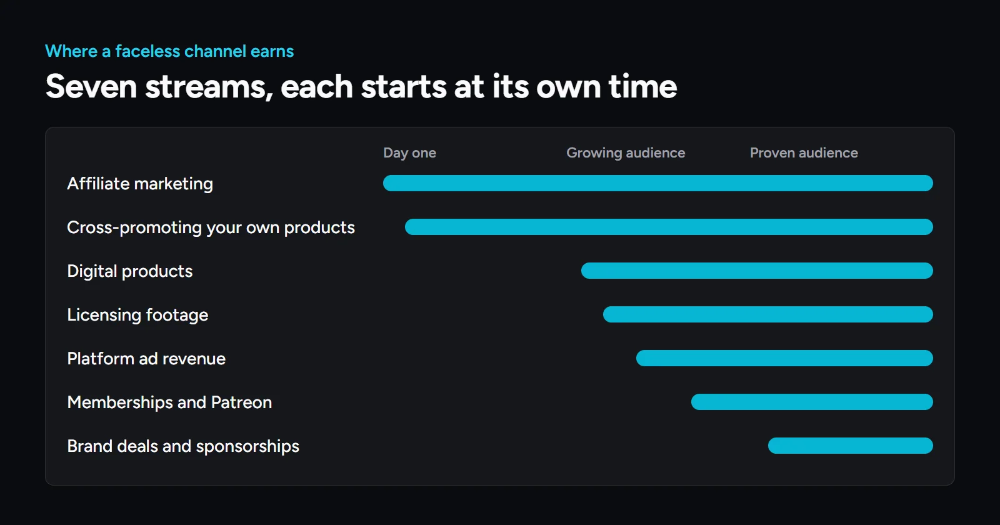
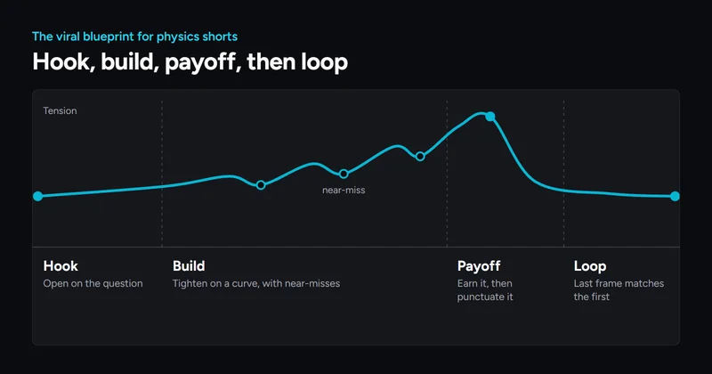

How to Build a Faceless YouTube & TikTok Channel With Physics Simulations (2026 Money Playbook)
The complete operator playbook for building and monetizing a faceless physics-simulation channel, niche selection, a production system, a 90-day growth plan, and every realistic revenue stream.

The Faceless Physics Channel: A Complete Money Playbook for 2026
Faceless content has quietly become one of the most durable ways to build an audience online. You do not need to be on camera, you do not need a studio, and you do not need to build a personal brand around your own name. What you need is a repeatable production system, a niche that rewards volume and consistency, and a realistic understanding of how attention turns into revenue. This guide walks through all of it using one of the most reliable faceless formats out there: satisfying physics and ball-simulation videos, produced with BallEngine.
This is not a get-rich-quick pitch. Building any channel that earns money takes months of consistent output, and monetization on YouTube and TikTok comes with real eligibility thresholds you have to cross first. What this playbook gives you is the operator's view: how to pick a sub-niche, set up a faceless-safe channel, produce at volume without burning out, grow through the first 90 days, and then layer in multiple revenue streams so you are not dependent on any single one. Read it end to end, then start with a handful of videos and iterate.
Key takeaways
- Faceless physics videos work because they are format-driven, not personality-driven, so anyone can produce them at volume without appearing on camera.
- The single biggest lever is consistency: a batch-and-schedule production system beats sporadic bursts of effort every time.
- BallEngine lets you make music-synced, vertical 9:16 physics videos with no camera, no editing skills, and built-in scheduling to eight platforms.
- Money comes from multiple streams (ad revenue, brand deals, affiliates, digital products, licensing, memberships), not one, and most take months to mature.
- Platform monetization has its own eligibility thresholds, so treat early months as audience-building, not earning.
- You own the videos you create, which opens up selling, licensing, and cross-promotion beyond platform payouts.
Why Faceless Plus Physics Is a Strong Niche
Faceless channels remove the two things that stop most people from ever starting: the discomfort of being on camera and the skill ceiling of video editing. When you strip those away, the only variables left are the quality of your format and how consistently you publish. That is a much fairer fight, and it is one you can win with a system rather than talent for performing.
Physics and ball-simulation content is a standout choice among faceless channel ideas 2026 for a few concrete reasons. The videos are inherently loopable and hypnotic, which is exactly what short-form feeds reward. They translate across languages because there is no dialogue to localize. And when the motion is synced to music, the payoff is emotional and immediate, which drives replays and completion rate, two signals that recommendation algorithms care about deeply.
There is also a structural reason this format suits people building faceless content that makes money: the marginal cost of a new video is close to zero. Once you know your workflow, producing the eleventh video in a session costs you a few minutes, not another full shoot. That economics is what makes daily publishing realistic for one person, and daily publishing is what feeds the algorithm enough signal to find your audience.
What makes the satisfying video niche durable
- No talking-head required, so there is nothing stopping you from publishing today.
- Format-driven rather than personality-driven, which means the channel can outlive any single creator's involvement and even be handed off or sold.
- Universally shareable, since satisfying motion needs no translation and travels across every region.
- Endlessly variable, because a physics engine can generate thousands of distinct simulations from the same core mechanic.
- Music-synced simulations add a hook that pure visual loops lack, turning a passive watch into a repeat watch.
- Low marginal cost per video, which is what makes a sustainable daily cadence realistic for a solo operator.
The core differentiator worth leaning into is sound. A silent bouncing ball is pleasant; a ball whose bounces play a recognizable melody is a scroll-stopper. That is the whole idea behind BallEngine's Rhythmic Mode, where the physics and the music are the same event. If you want the deeper mechanics of that, the walkthrough on how to make a bouncing ball synced to music covers it step by step.
The channels that last are built on a repeatable format and a publishing habit, not on any single viral moment.
Picking Your Sub-Niche and Positioning
"Physics videos" is a category, not a channel. The channels that grow fastest pick a narrower lane and own it. Sub-niching does two things: it makes your content instantly recognizable in a crowded feed, and it makes your channel legible to future sponsors and buyers who want to know exactly what audience they are reaching.
Ways to carve out a lane
- Music-first: every video is a song played by bouncing balls, leaning on recognizable melodies and clean audio.
- Mode-first: build a channel around one mesmerizing mechanic, like ball races, merge simulations, or brick-breaking, and go deep.
- Aesthetic-first: commit to a consistent visual signature such as neon-on-black, pastel gradients, or glassy 3D, so every thumbnail and frame is unmistakably yours.
- Challenge-first: framing like "which ball wins?" or "can it escape?" that invites comments and guesses, which lifts engagement.
- Theme-first: tie simulations to seasons, holidays, sports, or trending audio to ride discovery waves.
Positioning is not just a label; it shapes every downstream decision, from your channel name to which BallEngine modes you reach for. If you are still deciding which direction fits you, browse the different simulation types on the physics video generator and the music ball simulator to see what you enjoy producing, because enjoyment is what sustains you through the months of consistency this takes.
Pick a sub-niche you can happily produce 100 times. If a single video feels like a chore, a daily channel in that lane will not survive contact with month two.
Setting Up the Channel, Faceless-Safe
A faceless channel needs an identity that is not you. That works in your favour: the brand can scale beyond your personal availability, and it keeps your privacy intact. The goal is to build recognition around the format and the aesthetic.
Naming
Choose a name that describes the vibe or the mechanic rather than a person. Think descriptive and evocative over clever and obscure. A good faceless name hints at what viewers get (satisfying motion, music, physics) and is easy to spell, search, and remember. Check that the handle is available across YouTube, TikTok, and Instagram at minimum so your branding stays consistent everywhere you publish.
Branding and banner
- Lock a color palette and stick to it, so your grid and feed read as one coherent brand at a glance.
- Design a simple logo or wordmark that works as a tiny circular avatar, since that is how most people will first see you.
- Keep your banner clean: the channel name, a one-line description of the format, and your posting cadence.
- Reuse a consistent title style and, if you add text overlays, a single font, so every upload feels like part of a series.
- Never feel obligated to include a face, a real name, or personal details anywhere in the branding.
Write a short, honest channel description that tells both viewers and the algorithm what you make: for example, daily satisfying physics simulations synced to music. Consistency in these small signals compounds. When every video shares a palette, a title format, and a cadence, new viewers recognize you on the second exposure instead of the tenth.
The Production System: Batch, Then Automate
This is where faceless physics content pulls decisively ahead of most other formats. Because the videos are generated rather than filmed, you can produce a week or a month of content in a single focused session, then let scheduling do the daily work. That separation between making and publishing is the entire secret to sustainable volume.
How to batch with BallEngine
- Block a production session (a couple of hours) and commit to producing a set number of finished videos in it, say seven to fourteen.
- Open the faceless video generator and pick your mode and music for the batch, keeping to your sub-niche's look and sound.
- Vary parameters between clips so each video is distinct: different scales, colors, ball counts, or modes, drawing on the 1,000+ physics parameters available.
- Export each clip as vertical 9:16, up to 4K and 60fps, so the same file works cleanly on TikTok, Shorts, and Reels.
- Queue the whole batch into the built-in scheduler so the videos publish across the coming days without you touching anything.
- Log which concepts you tried so you can double down on what performs and drop what does not.
BallEngine runs in the browser with zero install, and it handles the parts that normally require a video editor and an animator: the simulation, the music sync, the rendering, and the export. If you are new to the workflow, the getting started creator studio guide and the how it works page walk through your first exports.
Using Autopilot to post daily
The built-in publishing and scheduling connects to TikTok, YouTube, Instagram, Facebook, Threads, Pinterest, X, and Snapchat, so one batch feeds every platform at once. The Autopilot feature takes it further: you set a recurring posting cadence once, and it keeps publishing on that rhythm without daily intervention. For a faceless volume channel, this is a genuine advantage, because the hardest part of consistency is showing up every single day, and automation removes that failure point entirely.
Separate creation from publishing. Batch your videos in one sitting, then let Autopilot post them on a steady cadence. Consistency stops depending on your daily willpower.
Publishing the same core video across multiple platforms is not diluting your effort; it is multiplying the return on a video you already made. Each platform has its own audience and its own discovery engine, so a clip that underperforms on one can find its audience on another. This cross-posting leverage is a big reason the best ball simulation software in 2026 is judged partly on how well it handles distribution, not just rendering.
The Growth Phase: Your First 30 and 90 Days
Growth on short-form is less about any single video and more about giving the algorithm enough consistent, well-formatted content to learn who your audience is. Treat the early months as data collection and system-building, not as the moment you expect income. Here is a realistic sequence.
Days 1 to 30: establish the system
- Publish daily, or as close to daily as you can sustain, prioritizing consistency over perfection.
- Test formats deliberately: different modes, songs, hooks, and opening seconds, so you learn what your audience stops for.
- Watch retention and completion rate more than raw views, because those signals tell you whether the format is working.
- Keep titles and the first frame strong, since the opening second decides whether a scroll becomes a watch.
- Do not pivot on a single dud or a single hit; look for patterns across ten or more videos before drawing conclusions.
Days 31 to 90: double down and compound
- Identify your two or three best-performing concepts and make more variations of exactly those.
- Tighten your visual signature so returning viewers recognize you instantly and the brand starts to stick.
- Cross-post every video to all your connected platforms to maximize surface area for discovery.
- Start reading comments for content ideas and to build the early community that later becomes a monetizable audience.
- Track your progress toward each platform's monetization eligibility, and keep publishing steadily toward those thresholds.
- Only now begin planning revenue streams in earnest, once you have proof the format resonates.
For a deeper tactical breakdown of what makes satisfying short-form spread, the viral growth blueprint for TikTok satisfying content pairs well with this section. The honest truth is that most channels see slow, uneven growth for the first stretch and then, if the format is right and the consistency holds, a compounding effect kicks in. There is no fixed timeline, and anyone promising you one is guessing.
Treat the first 90 days as building the machine. The machine, not any single video, is what eventually earns.
The First 90 Days: A Realistic Week-by-Week Plan
The 30-and-90-day framing above is the strategy; this is the calendar. A concrete week-by-week plan removes the guesswork about what to actually do each week, which is where most new creators stall. Adjust the numbers to your own capacity, but keep the shape: set up, ship volume, read the data, then double down.
Weeks 1 to 2: setup and first batch
- Lock your sub-niche, channel name, handles, and brand basics so you never have to re-decide these mid-flight.
- Create your account and run the getting started creator studio guide to produce three to five test exports and learn the workflow.
- Connect all your platforms and confirm publishing works end to end with a single test post.
- Batch your first seven to fourteen videos and schedule them, so week two publishes on autopilot while you plan week three.
Weeks 3 to 6: ship volume and gather data
- Hold a daily cadence, batching once or twice a week rather than scrambling each morning.
- Deliberately vary one thing at a time (song, mode, opening frame) so your data is interpretable rather than noisy.
- Log views, retention, and completion for every video in a simple sheet; you are hunting for patterns, not verdicts.
- Reply to early comments to seed a community and to collect content ideas straight from your audience.
Weeks 7 to 12: double down and tighten
- Identify your two or three strongest concepts and make deliberate variations of exactly those.
- Retire formats that consistently underperform across ten or more attempts, freeing your batches for what works.
- Sharpen your visual signature so returning viewers recognize you instantly and the brand starts to compound.
- Track progress toward each platform's monetization eligibility, and begin planning the revenue streams you control directly.
- Keep publishing through slow stretches; the compounding usually shows up right after most people would have quit.
A batch-once, publish-daily rhythm is the whole plan. If you protect one or two production sessions a week, the daily cadence takes care of itself and the first 90 days become a habit instead of a grind.
The Money: Revenue Streams, Honestly
Here is the part everyone skips to, so let us be clear-eyed about it. No single revenue stream makes a faceless channel a business on its own. The creators who build something durable stack several streams, each of which matures at a different pace and requires a different level of effort. Below is how the main ones actually work for a physics-simulation channel, first as a quick-reference table and then one at a time with the realistic requirements and caveats for each.
| Revenue stream | How it works | When it kicks in | Effort |
|---|---|---|---|
| Platform ad revenue | YouTube Partner Program and TikTok's creator programs pay a share of ad or fund revenue once you meet their eligibility thresholds. Thresholds and payout rules are set by each platform and change over time. | After you cross the platform's eligibility bar, which takes sustained publishing | Low ongoing once eligible; high upfront to qualify |
| Brand deals and sponsorships | Brands pay you to feature or mention their product. Faceless channels can still run sponsored segments, end cards, or dedicated videos. Rates depend on your audience size and niche fit. | Usually once you have a proven, sizable audience | Medium: outreach, negotiation, and delivery per deal |
| Affiliate marketing | You earn a commission when viewers buy through your links, such as tools you genuinely use. Works well in descriptions, pinned comments, and a link-in-bio. | Any time, but income scales with audience trust and size | Low to medium: set up links, mention naturally |
| Digital products | Sell preset or save-file packs, music-synced templates, or a course teaching your workflow. You own what you make, so packaging it is straightforward. | Once you have an audience that wants to make what you make | Medium to high upfront to build; low to maintain |
| Licensing footage | Brands, agencies, and app developers sometimes license satisfying clips for ads or backgrounds. Because you own your exports, you can license them directly. | Opportunistic; grows as your catalog and reach grow | Low per deal once your catalog exists |
| Cross-promoting your own products | Use the channel's reach to drive traffic to anything else you sell, from an app to merch to another channel. | As soon as you have something of your own to promote | Varies with what you are promoting |
| Memberships and Patreon | Superfans pay a recurring fee for perks like early access, exclusive packs, or requests. Small but loyal audiences can support this. | Once you have a core community, often mid-life of the channel | Medium: you owe members ongoing value |
Platform ad revenue
This is the stream most people picture first, and it is the slowest to unlock. Both the YouTube Partner Program and TikTok's creator programs set their own eligibility thresholds around things like followers, watch time, and views, and those requirements change over time, so always check the current rules directly on each platform. Payouts also vary with factors outside your control, including audience geography, seasonality, and advertiser demand. The honest way to treat ad revenue is as a passive baseline that arrives after months of consistent publishing, not as the thing that funds your first quarter.
Brand deals and sponsorships
Faceless channels absolutely land sponsorships; you do not need a personal brand to run a sponsored segment, an end card, or a dedicated feature. The requirement is a clear, legible audience a brand wants to reach, which is another argument for tight sub-niching. Realistically, meaningful brand deals arrive once you have a proven and sizable following, and rates depend heavily on your niche fit and reach. Expect outreach, negotiation, and delivery work per deal, and be selective, because promoting something that does not fit your audience erodes the trust every other stream depends on.
Affiliate marketing
Affiliates are among the streams you can start earliest, because you do not need to cross a platform threshold to place a link. You earn a commission when viewers buy through links to tools or products you genuinely use, placed in descriptions, pinned comments, or a link-in-bio. The caveat is that income scales with audience trust and size, so early on it will be modest. Only recommend things you actually stand behind; a physics-simulation audience is savvy, and credibility is the asset you are really building.
Digital products
This is a natural fit for a physics channel, because your audience is by definition people interested in making these videos themselves. You can package preset or save-file packs, music-synced templates, or a course teaching your workflow, and because you own what you create in BallEngine, packaging it is straightforward. The trade-off is upfront effort: a good product pack or course takes real work to build well. Once built, though, it sells repeatedly with little maintenance, which makes it one of the higher-leverage streams over time.
Licensing footage
Brands, agencies, and app developers sometimes license satisfying clips for ads, backgrounds, or app assets. Because you own your exports, you can license them directly rather than through a platform. This is opportunistic income rather than a predictable line item, and it grows as your catalog and reach grow, since a larger, well-organized library gives buyers more to choose from. Keep your best clips archived and easy to find, and be clear about usage terms whenever you make a deal.
Cross-promoting your own products
Once you have anything of your own to sell, from an app to merch to a second channel, your audience becomes a distribution engine you already control. The requirement here is simply having a product worth promoting, and the effort varies entirely with what that product is. The advantage over most streams is that none of the value leaks to a platform or a network; you keep the full margin and you own the relationship with the customer.
Memberships and Patreon
Recurring memberships let superfans pay for perks like early access, exclusive packs, or requests. The realistic requirement is a genuine community, not just a view count, so this tends to mature in the middle of a channel's life rather than at the start. The ongoing caveat is that you owe members continuing value; a membership you neglect churns quickly. Done well, though, even a small, loyal core can provide the kind of predictable monthly income that ad revenue rarely does at modest scale.
How to think about stacking these
- Ad revenue is the slowest to unlock but the most passive once it starts, so treat it as a baseline, not the whole plan.
- Affiliates and your own digital products are the streams you control most directly and can start earliest, even before ad eligibility.
- Brand deals and licensing reward a clear niche and a professional-looking catalog, which is another argument for tight positioning.
- Digital products like save-file packs are a natural fit here because your audience is, by definition, people interested in making these videos themselves.
- Diversify on purpose: platforms change their rules, so a channel resting on a single income source is fragile.
A note on selling digital products: because you can create polished, reusable configurations in BallEngine, a well-organized creator can package preset packs or teach their process as a course. That turns your own production knowledge into a second product line built on the same tool. If you want to understand what unlocks at each subscription level for producing that kind of premium, branded output, the plans page lays it out.
How Much Can You Realistically Make?
The honest answer is that it depends, and any specific number you see quoted for a niche like this is a guess dressed up as a promise. Rather than invent figures, it is far more useful to understand the variables that actually determine the outcome, because those are the levers you can influence.
The variables that move the number
- Niche and audience: some topics and regions attract more advertiser demand than others, and payout rates per view vary widely and are set by the platforms, not by you.
- Volume and consistency: more well-formatted videos published steadily give the algorithm more chances to find your audience, which is the input everything else scales from.
- Platform mix: each platform monetizes differently and has its own eligibility rules, so where your audience concentrates changes how the same reach converts to income.
- Seasonality and advertiser demand: ad rates fluctuate through the year and are outside your control, so monthly income is naturally uneven.
- Revenue-stream stack: a channel earning from affiliates, products, and licensing alongside ad revenue is far less exposed to any single platform's rate changes.
- Time in market: streams compound, so a catalog and audience built over a year behaves very differently from one built over a month.
Notice that most of these variables reward the same two behaviors: publishing consistently and diversifying your income. That is the practical takeaway. Instead of chasing a target dollar figure, focus on the inputs you control, keep publishing, and add revenue streams as your audience grows. The number, whatever it turns out to be, is downstream of the system.
Ignore anyone quoting a specific monthly income for this niche. Rate cards, per-view payouts, and eligibility rules are set by the platforms, vary widely, and change over time. Optimize the inputs you control (consistency and diversification) and let the number follow.
Scaling to Multiple Channels and Brands
Once your first channel runs on a reliable system, the same system scales sideways. Because production is batched and publishing is automated, a second or third channel does not multiply your workload the way a second film-and-edit channel would. Each new brand is mostly a matter of positioning and a fresh publishing schedule, not a fresh skill set.
How to scale without multiplying the work
- Give each channel its own distinct sub-niche and visual signature, so you are building separate brands rather than diluting one.
- Batch production across channels in the same session, since switching modes or palettes between clips is faster than context-switching between whole workflows.
- Set a separate Autopilot cadence per brand, so each channel publishes on its own recurring rhythm without daily attention from you.
- Reuse what you have learned: the concepts that performed on channel one become the tested starting point for channel two.
- Add channels only once the first is genuinely on rails, so you are duplicating a working system rather than spreading a struggling one thinner.
The recurring Autopilot publishing is what makes this realistic for one operator. When each brand posts on a set-and-forget cadence, the constraint stops being your daily time and becomes your production capacity, which batching already handles efficiently. This is how a solo creator can run a small portfolio of faceless channels rather than a single one, and it is a big part of why the format appeals to people who think in terms of building a media business rather than a hobby. There are already 100+ creators producing with BallEngine, and the multi-brand approach is the natural next step once a first channel is working.
Do not start channel two to escape a channel one that is not working. Scaling multiplies whatever you already have, so duplicate a proven system, never a struggling one.
Realistic Timeline and Expectations
Let us set expectations honestly, because unrealistic ones are the single biggest reason people quit. A faceless physics channel is a real business you are building, and businesses take time to become profitable. Here is a grounded way to think about the arc.
- Months 1 to 3: you are building the system and the catalog. Expect slow, uneven growth and little to no income. Success here means publishing consistently and learning what works.
- Months 3 to 6: if the format resonates, you may see growth start to compound and approach platform monetization eligibility. This is when early affiliate and product income can begin.
- Months 6 and beyond: with a proven format and a real audience, multiple revenue streams can start layering. This is where the stacking strategy pays off.
- Throughout: none of these timelines are guaranteed. Some channels move faster, many move slower, and some formats never catch. Consistency improves your odds; it does not promise an outcome.
Anyone quoting you a specific monthly figure or a guaranteed timeline is selling a fantasy. The honest answer is: it depends on your niche, your consistency, and factors outside your control. Build the system anyway, because the system is what creates the possibility.
The advantage of the physics-simulation format is that the cost of consistency is low. Because BallEngine handles production, you can keep publishing through the slow months without the exhaustion that kills film-and-edit channels. That endurance is often what separates the channels that make it from the ones that stop at video thirty.
Common Mistakes to Avoid
- Quitting before the system compounds. Most people stop right before the flywheel would have started turning.
- Publishing inconsistently. Sporadic bursts confuse the algorithm and stall growth; steady cadence is worth more than occasional brilliance.
- Skipping the sub-niche. A channel that is a bit of everything is legible to no one, including sponsors.
- Chasing one viral video instead of building a format. Virality is a lottery; a repeatable format is a business.
- Ignoring sound. Music-synced payoff is the differentiator here; muted or mismatched audio wastes the format's biggest strength.
- Betting everything on ad revenue. It is the slowest stream to unlock and the one you control least.
- Over-editing or over-thinking each video instead of shipping volume and learning from the data.
- Neglecting cross-posting. Making a video once and posting it to one platform leaves most of its potential reach on the table.
- Reacting to single videos. One hit or one flop is noise; look for patterns across ten or more.
- Starting a second channel to escape a first one that is not working, which just spreads a broken system thinner.
- Promoting products that do not fit the audience, which erodes the trust every other revenue stream depends on.
- Waiting for perfect branding before publishing. Ship, then refine your look as you go; an unpublished channel earns nothing.
Tools and Launch Checklist
You need surprisingly little to run a faceless physics channel. The whole point of the format is that it collapses the traditional production stack into one browser tab. Here is the practical checklist to go from zero to publishing.
- Pick your sub-niche and confirm you can happily produce 100 videos in it.
- Choose a faceless channel name and secure the matching handle on YouTube, TikTok, and Instagram.
- Set your brand basics: palette, avatar, banner, and a one-line description of your format and cadence.
- Create a free BallEngine account at signup and run through your first exports.
- Produce your first batch of videos as 9:16 verticals, varying parameters so each is distinct.
- Connect your platforms and set an Autopilot cadence so publishing runs on its own.
- Publish consistently for 90 days, tracking retention and completion rate, before judging results.
- Once the format is proven, begin layering revenue streams starting with the ones you control directly.
That is genuinely the entire stack: a positioning decision, a set of handles, and the faceless video generator. BallEngine is free to start, with Lite, Creator, Pro, Elite and Agency tiers that unlock more exports, higher resolution, and custom branding as your channel grows. Creator and up include automated posting, and a bigger plan gives you more posts when you post more. There are already 100+ creators producing with it, and the YouTube Shorts generator workflow is built specifically for the vertical, short-form format this playbook is about.
Frequently Asked Questions
Can you really make money with a faceless channel?
How many videos should I post?
Do I need to show my face?
How long until I can monetize?
Is the physics-simulation niche saturated?
Do I own the videos, and can I sell them?
Do I need video editing or animation skills?
What equipment do I need?
How do I post to multiple platforms without doubling the work?
Can I run more than one channel at once?
What is the single most important factor for success?
Should I focus on YouTube or TikTok first?
Where can I learn the actual production workflow?
Start Building Your Faceless Channel
A faceless physics channel is one of the most accessible content businesses you can start in 2026: no camera, no editing skills, and a production system that fits around the rest of your life. The path is honest and it is not instant, build a system, publish consistently for months, and layer revenue streams as your audience grows, but it is a path you can actually walk. Create a free account at signup and produce your first batch with the faceless video generator today. The channels that make it are simply the ones that started and kept going.
Tutorials for this topic
All tutorialsRelated articles
View all articles
The Viral Physics Video Blueprint: How Satisfying Simulations Get Millions of Views
A tactical masterclass on engineering retention and shares for physics videos, hook formulas, tension-release, sound design, seamless loops, captions, hashtags, and reading your analytics.

How to Make a Bouncing Ball Video Synced to Music (Complete 2026 Guide)
Everything you need to make a bouncing ball that plays a song, how music-synced physics works, a full step-by-step BallEngine workflow, MIDI and scale tips, and how to publish.